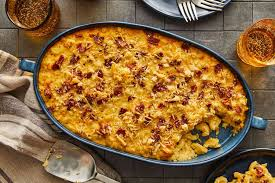

Smoked Bacon Mac and Cheese

Description
Smoked Bacon Mac and Cheese is truly one of the best comfort foods ever invented. Combining these two foods make a dinner that is next level delicious. This Smoked Bacon Mac and Cheese make the best dinner. The addition of the smoked cheddar cheese brings a depth of flavor to the whole dish, It is an excellent side dish or main course. What could take creamy, cheesy mac and cheese over the top? Why, bacon, of course! This recipe doesn’t just have bacon mixed into the cheesy macaroni but the actual roux is made with bacon
Ingredients
- bacon
- canola oil
- flour
- milk
- salt
- pepper
- process cheese
- cheddar cheese
- pasta
Steps
- Preheat the oven. Preheat to 325 degrees and lightly grease a square baking dish
- Cook the macaroni. Slightly undercook your noodles (about 1 minute under al-dente). Drain and set aside.
- Make the roux. Melt the butter in a medium saucepan over medium heat. Blend in the flour, salt, and pepper. Cook for 2 minutes.
- Add milk and cheese. Stir in milk and half and half, slowly, stirring constantly. Remove from heat. Add 1 cup shredded cheese to the sauce and stir just until melted. Add the cooked macaroni noodles and toss to coat them in the sauce.
- Pour into baking dish. Pour half or the pasta mixture into the prepared baking dish. Sprinkle ½ cup cheese over the top. Pour remaining pasta over it and sprinkle with remaining cheese.